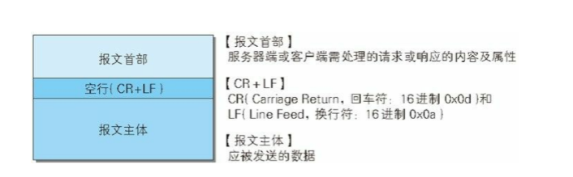
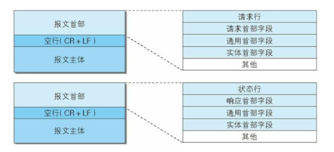
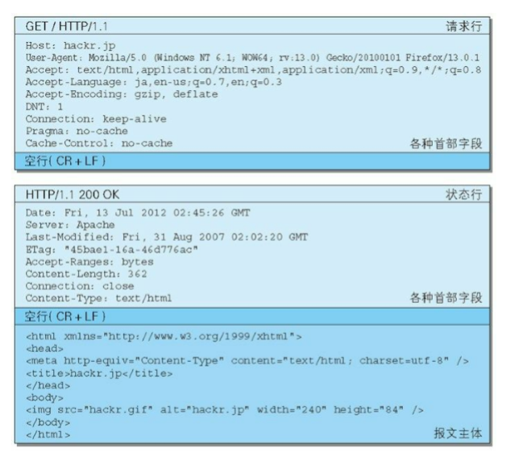
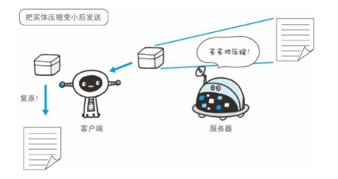
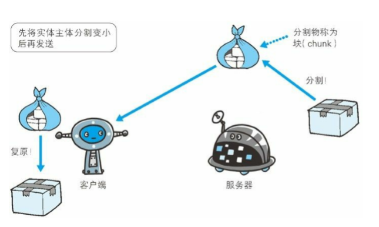
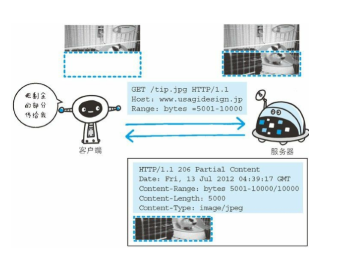

HTTP 通信过程包括从客户端发往服务器端的请求及从服务器端返回客户端的响应。
HTTP 报文
用于 HTTP 协议交互的信息被称为 HTTP 报文。请求端（客户端）的 HTTP 报文叫做请求报文，响应端（服务器端）的叫做响应报文。 HTTP 报文本身是由多行（用 CR+LF 作换行符）数据构成的字符串文本。
HTTP 报文大致可分为报文首部和报文主体两块。两者由最初出现的空行（CR+LF）来划分。通常，并不一定要有报文主体。

图：HTTP 报文的结构
请求报文及响应报文的结构
我们来看一下请求报文和响应报文的结构。

图：请求报文（上）和响应报文（下）的结构

图：请求报文（上）和响应报文（下）的实例
请求报文和响应报文的首部内容由以下数据组成。现在出现的各种首部字段及状态码稍后会进行阐述。
- 请求行
包含用于请求的方法，请求 URI 和 HTTP 版本。 - 状态行
包含表明响应结果的状态码，原因短语和 HTTP 版本。 - 首部字段
包含表示请求和响应的各种条件和属性的各类首部。
一般有 4 种首部，分别是：通用首部、请求首部、响应首部和实体首部。 - 其他
可能包含 HTTP 的 RFC 里未定义的首部（Cookie 等）。编码提升传输速率
HTTP 在传输数据时可以按照数据原貌直接传输，但也可以在传输过 程中通过编码提升传输速率。通过在传输时编码，能有效地处理大量 的访问请求。但是，编码的操作需要计算机来完成，因此会消耗更多的 CPU 等资源。报文主体和实体主体的差异
- 报文（message）
是 HTTP 通信中的基本单位，由 8 位组字节流（octet sequence， 其中 octet 为 8 个比特）组成，通过 HTTP 通信传输。 - 实体（entity）
作为请求或响应的有效载荷数据（补充项）被传输，其内容由实 体首部和实体主体组成。通常，报文主体等于实体主体。只有当传输中进行编码操作时，实体 主体的内容发生变化，才导致它和报文主体产生差异。
压缩传输的内容编码
HTTP 协议中有一种被称为内容编码的功能也能进行类似的操作。内容编码指明应用在实体内容上的编码格式，并保持实体信息原样压缩。内容编码后的实体由客户端接收并负责解码。
图：内容编码
常用的内容编码有以下几种。 - gzip（GNU zip）
- compress（UNIX 系统的标准压缩）
- deflate（zlib）
- identity（不进行编码）
分割发送的分块传输编码
在传输大容量数据时，通过把数据分割成多块，这种把实体主体分块的功能称为分块传输编码（Chunked Transfer Coding）。
图：分块传输编码
分块传输编码会将实体主体分成多个部分（块）。每一块都会用十六 进制来标记块的大小，而实体主体的最后一块会使用0(CR+LF)来标记。
使用分块传输编码的实体主体会由接收的客户端负责解码，恢复到编码前的实体主体。HTTP/1.1 中存在一种称为传输编码（Transfer Coding）的机制，它可 以在通信时按某种编码方式传输，但只定义作用于分块传输编码中。
发送多种数据的多部分对象集合
HTTP 协议中也采纳了多部分对象集合，发送的一份报文主 体内可含有多类型实体。通常是在图片或文本文件等上传时使用。 - multipart/form-data 在 Web 表单文件上传时使用。
- multipart/byteranges 状态码 206（Partial Content，部分内容）响应报文包含了多个范围的内容时使用。
获取部分内容的范围请求
以前，用户不能使用现在这种高速的带宽访问互联网，当时，下载一个尺寸稍大的图片或文件就已经很吃力了。如果下载过程中遇到网络 中断的情况，那就必须重头开始。为了解决上述问题，需要一种可恢复的机制。所谓恢复是指能从之前下载中断处恢复下载。
要实现该功能需要指定下载的实体范围。像这样，指定范围发送的请 求叫做范围请求（Range Request）。
对一份 10000 字节大小的资源，如果使用范围请求，可以只请求 5001~10 000 字节内的资源。

执行范围请求时，会用到首部字段 Range 来指定资源的 byte 范围。
内容协商返回最合适的内容
当浏览器的默认语言为英语或中文，访问相同 URI 的 Web 页面时， 则会显示对应的英语版或中文版的 Web 页面。这样的机制称为内容 协商（Content Negotiation）。
包含在请求报文中的某些首部字段（如下）就是判断的基准。这些首 部字段的详细说明请参考下一章。
- Accept Accept-Charset
- Accept-Encoding
- Accept-Language
- Content-Language
内容协商技术有以下 3 种类型。 - 服务器驱动协商（Server-driven Negotiation）
由服务器端进行内容协商。以请求的首部字段为参考，在服务器端自 动处理。但对用户来说，以浏览器发送的信息作为判定的依据，并不一定能筛选出最优内容。 - 客户端驱动协商（Agent-driven Negotiation）
由客户端进行内容协商的方式。用户从浏览器显示的可选项列表中手 动选择。还可以利用 JavaScript 脚本在 Web 页面上自动进行上述选 择。比如按 OS 的类型或浏览器类型，自行切换成 PC 版页面或手机 版页面。 - 透明协商（Transparent Negotiation）
是服务器驱动和客户端驱动的结合体，是由服务器端和客户端各自进 行内容协商的一种方法。